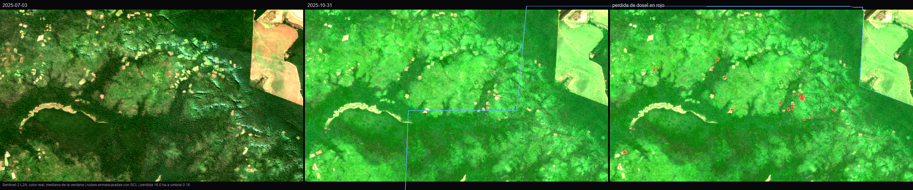
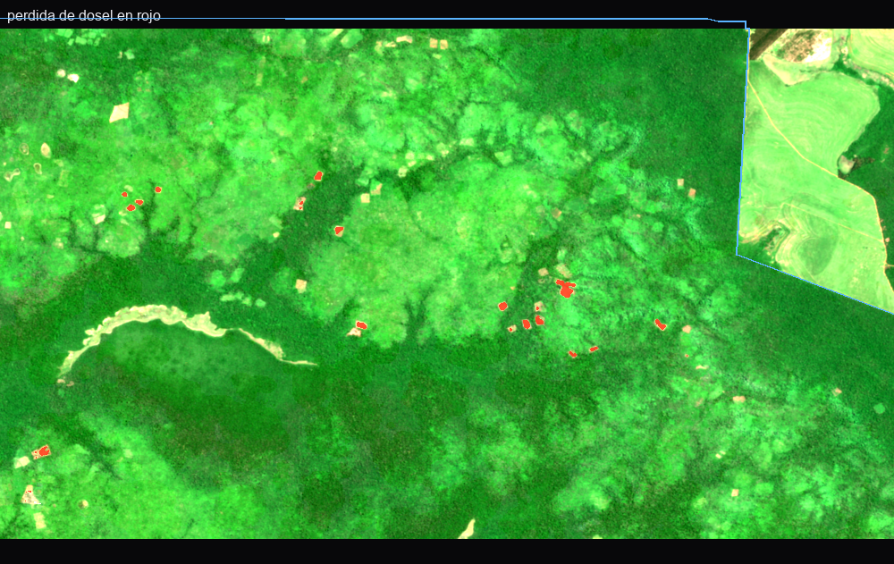
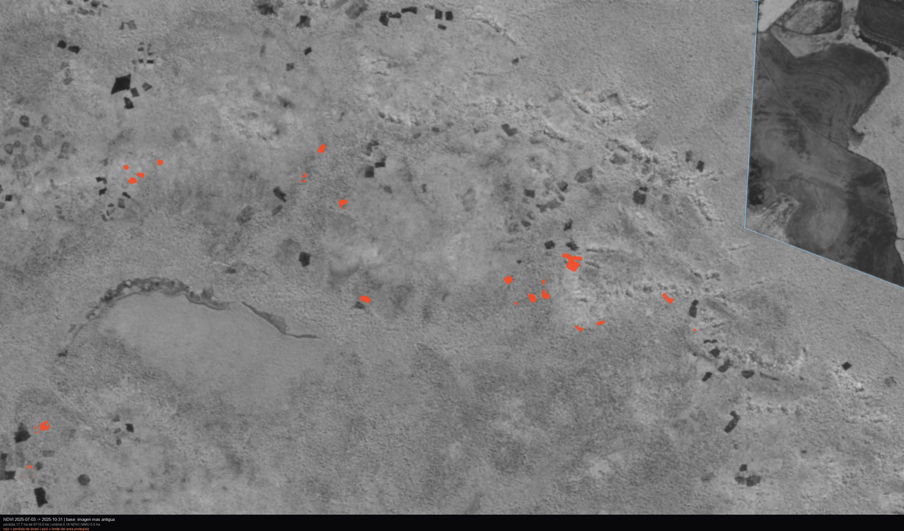
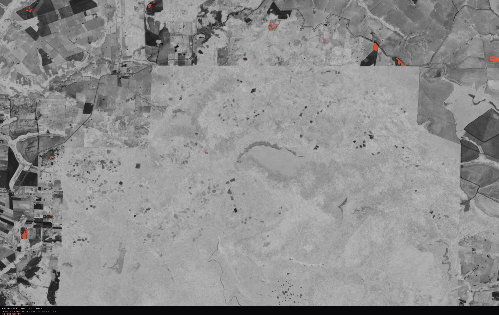
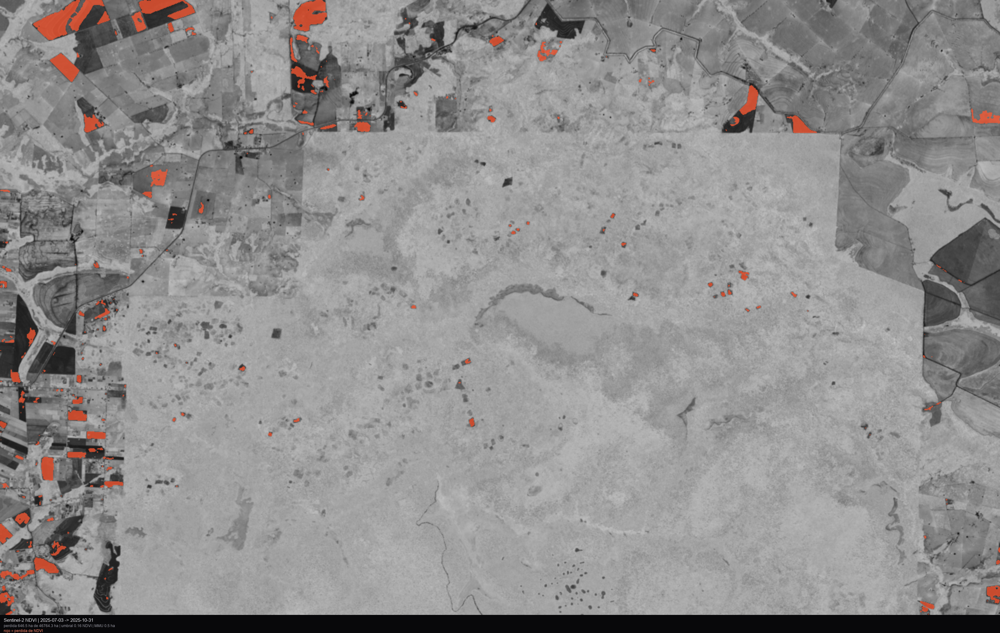

Reserva Natural del Bosque Mbaracayú · Sentinel-2 L2A · 3 jul → 31 oct 2025
NISAR no tiene imágenes de esta zona anteriores al 19 de junio de 2026, así que el período se midió con Sentinel-2. La imagen de julio de 2025 va como base y encima se marcan en rojo los píxeles donde el NDVI cayó lo suficiente para indicar pérdida de dosel. El análisis se limita al polígono del área protegida.
← Volver al caso de estudio
La diferencia de brillo entre julio y octubre es estacional: en octubre ya empezó la temporada de lluvias y la vegetación responde. Por eso el cambio no se lee de la comparación visual sino del umbral aplicado sobre el NDVI. La imagen de color sirve para ubicar las parcelas, no para medirlas.

La figura se renderiza a 1.000 px por panel (unos 16 m/píxel) para que sea legible. El análisis numérico se hace a 1.600 px (10 m/píxel); por eso la superficie dibujada aquí (16,0 ha) difiere levemente de la reportada en la tabla (17,7 ha brutas).

| Métrica | Valor |
|---|---|
| Área de la caja | 9.719 ha |
| Dentro de la reserva | 8.840 ha (91 %) |
| Pérdida bruta (ΔNDVI < −0,16) | 17,7 ha |
| Con unidad mínima de 0,5 ha | 15,7 ha en 14 parcelas |
| Parcela mayor | 3,9 ha |
| Control (2.808 ha dentro de la reserva) | 0,8 ha |
| NDVI medio del bosque | 0,469 → 0,567 |
Catorce manchas de menos de 4 ha cada una. Es el patrón de desmonte en parcelas pequeñas, no el de una explotación a gran escala: no hay ningún bloque grande, y el control apenas registra 0,8 ha en 2.808 ha.
El NDVI medio sube porque entre julio y octubre empieza la temporada de lluvias. Ese aumento de fondo es la razón por la que el umbral se aplica como caída relativa y no como valor absoluto.
| Caída mínima de NDVI | Superficie |
|---|---|
| 0,08 | 31,8 ha |
| 0,12 | 24,4 ha |
| 0,16 (usado) | 17,7 ha |
| 0,20 | 12,0 ha |
| 0,25 | 6,9 ha |
La superficie cae de forma continua al endurecer el umbral, sin saltos: no hay una población separada de píxeles que sugiera un artefacto. El valor de 0,16 es una elección intermedia y así se informa.
El primer intento definió el bosque como NDVI > 0,55. En una imagen de julio eso deja apenas 675 ha de 46.764, porque el bosque seco estacional baja de ese valor. Con un umbral permisivo de 0,25 el bosque pasa a 41.668 ha, pero entran cultivos y pastizales, y el rojo termina siguiendo parcelas agrícolas.


Datos de cada corrida: reserva.js (máscara de la reserva),
barrido.js y permisivo.js (umbrales
de NDVI), optico.js (caja original). Se generan con
demo/caso-chaco/tools/s2cambio.py.